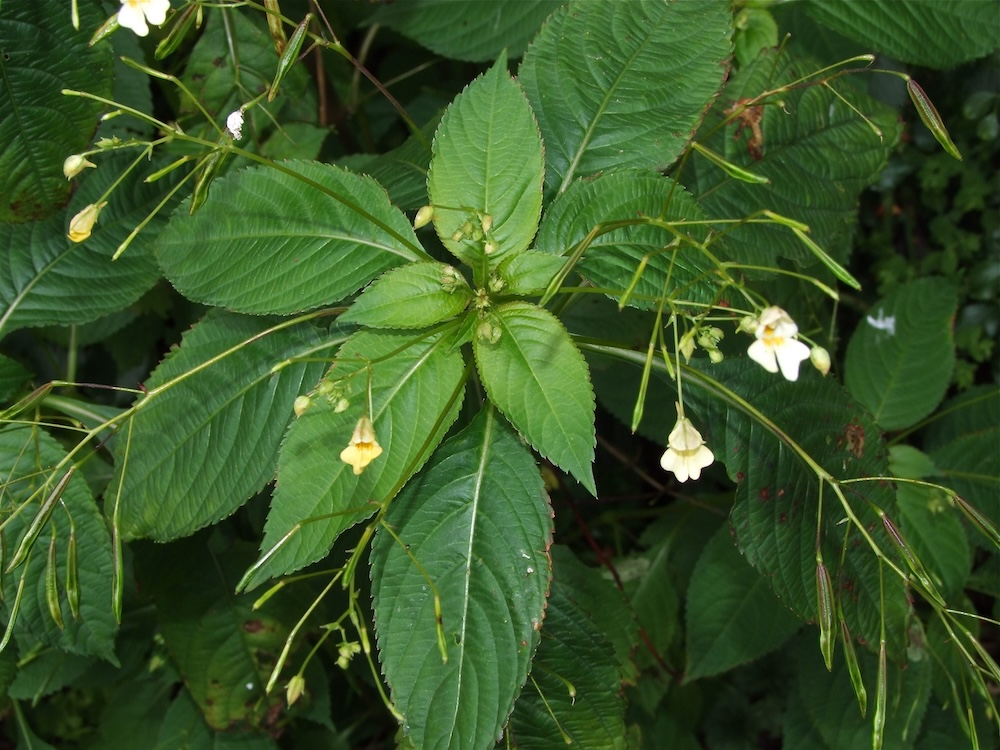

Wenig auffällig, sehr erfolgreich
Im Gegensatz zu seinem auffälligen Verwandten, dem Drüsigen Springkraut, ist das Kleinblütige fast unscheinbar — die Blüten sind tatsächlich nur 1–1,5 cm groß. Aber genau das ist der Trick: Es kann sich selbst bestäuben (über Blüten, die sich gar nicht öffnen) und so unabhängig von Insekten Samen produzieren. Ein leises, aber sehr effizientes Verbreitungssystem.
Aus Sibirien nach Hessen
Die Pflanze stammt ursprünglich aus dem Altai-Gebirge in Zentralasien und kam im 19. Jahrhundert über Botanische Gärten nach Europa. Heute ist sie in den meisten Buchenwäldern Mitteleuropas heimisch geworden — oft in dichten Beständen am Wegrand. Sie ist (anders als das Drüsige Springkraut) NICHT als invasiv eingestuft, weil sie nur an gestörten Standorten wächst und keine echten Konkurrenten verdrängt.